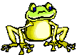

Dear Interested Accelerated Biologist,
I want to welcome you to Accelerated Biology. I am looking forward to the coming school year and our time together in class. Hopefully, we will have time to appreciate the broad ideas in biology, and its effect on our daily lives. I would love to meet you all before next year and give you an opportunity to talk to this year's students. There will be a meeting in my classroom S-4 (located above the principal's office in the administration bldg) on Tuesday May 6th. The meeting will last about 45 minutes. An email was sent to your parents reminding you of the meeting if you missed the meeting send me an email for the presentation.
Textbooks for Accelerated Biology are provided by the district. This is the title and ISBN number for the textbook: Campbell, Mitchell, Reece, Taylor Biology Concepts & Connections 6th Edition (ISBN: 013135566X) there is a picture of a cheetah on the cover. This book is designed for an honors/accelerated biology course and is authored by the same people who authored the AP Biology textbook. Since writing and highlighting will not an option in the district owned books; if you like to annotate or highlight your text you may consider purchasing your own copy used online, NOTE: owning a copy of the book is not mandatory the school will provide one.
This summer will present an opportunity for you to do some web surfing and reading that will assist you in finding an idea for the mandatory science fair project for next year. Included in this letter is your summer assignment. The topics, guidelines and resource suggestions are included further on in this letter. Please take care to follow the directions for your write-ups. Remember the journal reflections (assignment #2)and and the typed article review (assignment #3) are due on the FIRST DAY of SCHOOL. (if you register late you can have an additional 2-3 weeks to complete the assignment once school begins).
Journals will be provided for you when you attend the after school meeting.
Assignment #1: Please complete and email the following information by the class meeting on May 1st
Contact Information
Please go to http://goo.gl/W77Wj (goo.gl/W77Wj) and fill out this form prior to attending the May meeting.
Summer Homework Assignments: (if you sign up later then you can have an additional 2-3 weeks to complete the assignments)
DO NOT WAIT TO THE LAST MINUTE TO DO THESE ASSIGNMENTS :-)
Assignment #2 Journal Reflections and research grid (this is the link to the research grid) (all responses must be in blue or black ink, in your journal) (due the first day of school)
a. I would like you to spend time thinking about some life science questions that you might like to investigate for your science project. If you'd like to work with one or two other Accelerated Biology persons on a science project, then work on this assignment together over the summer. What interests you the most? You may visit Scientific American at http://www.scientificamerican.com/department.cfm?id=feature-articles or http://www.sciencedaily.com/ see some feature articles that might stimulate your interest.
b. Use your experiences: Remember a time you noticed something and thought "I wonder how that works?" or "I wonder what would happen if..." then turn that into a project. Browse and look at book titles, then look inside the ones that look interesting to you. Also thumb through encyclopedias and magazines. Good magazines for ideas are: National Geographic, Discover, Prevention, and Scientific American. Perhaps go to the downtown Library.
Think about current events. Look at the newspaper. People are hungry in Africa because of droughts - a project on growing plants without much rain, which types grow ok with little water? Or the ozone hole over Antarctica - how can we reduce ozone? -a project on non aerosol ways to spray things. Or oil spills. How can we clean them up? -a project on how to clean oil out of water
Watch commercials on TV. Test their claims. Check out these two documents How we help and harm the environment and ideas for controlled experiments
c. Go to the Science Buddies Topic Wizard First at http://www.sciencebuddies.org/mentoring/project_topic.shtml to figure out which topics you are most interested in then check out some of these science fair topic sites to see if anything else sparks your interest (make sure you are looking at lists for high school level projects that are related to biology):
http://www.usc.edu/CSSF/History/ (check out past experiments from the California State Fair... see what other students have done in the past (in biology related fields); how rigorous is your idea?
NOW check on the links below to see how to get started (you'll need a list of ideas for the next part of the summer assignment).
http://www.usc.edu/CSSF/Resources/GettingStarted.html
http://www.sciencedaily.com/
http://www.sciencebuddies.org/mentoring/project_ideas.shtml
http://www.all-science-fair-projects.com/
http://www.scienceproject.com/projects/index/senior.asp
d. In your journal, please list at least TEN ideas that might make good projects (remember the topics need to be related to a part of biology).
e. Pick only TWO of your 10 topics and write at least FIVE specific “testable” questions to investigate about each of the two topics. TESTABLE QUESTIONS are ones that could be answered by doing an experiment. Next, PICK ONE OF THE QUESTIONS FROM EACH TOPIC AND speculate how EACH QUESTION could be turned into an actual experiment. (There are a total of two possible experiments due, one from each topic.) Experiments must be logical and safe to perform. For example if one of your interests involves spiders you might ask: 1) how strong is spider web material? 2) what are the territorial ranges of a spider? 3) if a spider is exposed to various colors of light, will it affect the manner (speed, size, uniformity) in which it spins its web? Etc… Try putting different words in these blanks...
What is the Effect of ____________ on _______________?
f. Now search the web with http://www.google.com and find at least five web sites for each of the two topics that you picked in part (e), that means a total of 10 web sites. Complete the research grid (you will have to go online to use this link), you may print it out and paste in your journal or just make the grid in your journal).
After school begins we’ll spend some time together working on your questions to see if the are “testable” questions. If they are, and they are unique and not something which has been previously investigated, then it may become your science fair project. We’ll investigate the following: What will this experiment look like? What is your control? How many observations will you have to make? How long will the experiment take? Can you avoid using humans? Can you avoid using mammals altogether?
Assignment #3: (due the first day of school)
You are to find ONE article from the publications listed below that address some of the life science topics you chose in assignment 2. If you are not sure that the topic or article is appropriate, please email me for assistance. This article must be recent, within the last twelve months. The topic can include ecology, genetics, genetic engineering (e.g. disease resistant crops), evolution, plants, animals, bioethics, etc. the article must be at least 4 pages long, news articles are too brief. This TYPED assignment is due the first day of school. (see specific details in the next section).
The Article Review write-up requires a summary of the article, 1 typed page (10point, single spaced). Grades are based on your understanding of the article and the ability to express your understanding in writing. (Yes, spelling and grammar count.)
Please include the following: Authors Name (s), "Title of Article", Publication Title, Date, Volume, Page Numbers. Please put this information at the end of your article review. (go to www.bibme.org to do the references please use APA format).
The following publications have some amazing articles that might peak your interest and initiate a science fair idea. Please note that these magazines do not offer all their articles on-line for free; the public library has copies that are free (if you need a public library card you can get in through www.ccclib.com.) Note: do not pay for articles go to the public library they are free there.
Discover Magazine http://www.discovermagazine.com
Scientific American http://www.sciam.com/
BBC Science and Nature http://www.bbc.co.uk/sn/
Have a great summer,
Mrs. Groch
email: rgroch@srvhs.org
Web Site: accbioindex.htm